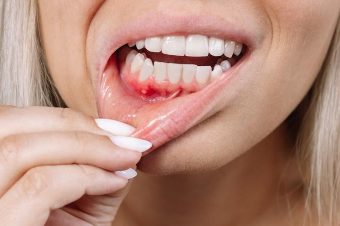
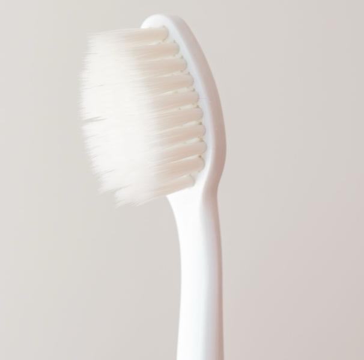

Chemotherapy is a medicine that helps fight cancer. It can also make your mouth sore, dry, or infected. Good mouth care helps prevent these problems. It keeps your mouth healthy and makes you feel better.
Soreness or pain in your mouth or gums
Red or swollen areas inside your mouth
White patches or sores that do not heal
Dryness or a sticky feeling in your mouth
Bleeding gums or painful swallowing

Your care team will suggest ways to keep your mouth healthy, such as:
Rinse your mouth often with a gentle mouthwash or saltwater solution.
Use a soft toothbrush to clean your teeth gently.
Avoid mouthwashes with alcohol. They can dry out your mouth.
Your care team may give you medicated mouth rinses or medicines if your mouth is sore or infected.
Keep your lips moist with a lip balm if they get dry or cracked.
Brush your teeth at least twice a day. Use a soft toothbrush and mild toothpaste.
Gently floss daily to remove food and plaque.
Rinse your mouth after eating and before bed.
Drink plenty of water to stay hydrated. You can also suck on ice chips.
Avoid spicy, hot, salty, or acidic foods that can irritate your mouth.
Do not use tobacco or alcohol. They can make mouth problems worse.

Maintain good oral hygiene to prevent mouth issues. Visit your dentist before starting cancer treatment, and follow your care team’s instructions carefully.
Do not use tobacco products or alcohol.
If your mouth is sore, choose soft, bland foods. Good options are yogurt, mashed potatoes, bananas, or mild soups. Avoid spicy, crunchy, or acidic foods. Take small bites and eat slowly.
Most mouth problems will improve with good care and hygiene. If issues are treated early, you can finish your cancer treatment more comfortably.
Call your care team if:
Your mouth is painful.
You have sores or white patches that do not heal.
Your mouth is very dry, swollen, or bleeding.
You have trouble swallowing or eating.
You have less urine, very dark urine, dry mouth, or feel weak or dizzy.
You have questions about how to care for your mouth.
Thank you for trusting us with your care. We are here to support you and want you to feel your best. Contact us with any questions.
IF YOU HAVE A MEDICAL EMERGENCY, CALL 911 OR GO TO THE EMERGENCY ROOM.
The information presented is intended for general information and educational purposes. It is not intended to replace the advice of your health care provider. Contact your health care provider if you believe you have a health problem.
Last updated May 2025
© 2025 Mytonomy, Inc. All rights reserved.